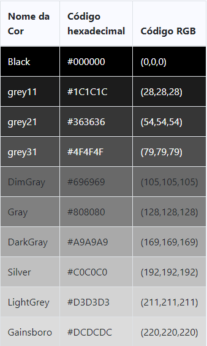

Os elementos análisados serão:
No HTML, as cores podem ser nomeadas pelo nome (em Inglês), como White para branco, green, para verde, blue, para azul e assim por diante.
Podem ser codificadas, por números hexadecimais, como, FFAA00 – 1,2,3,4,5,6,7,8,9,a,b,c,d,e,f.
Os códigos são como uma misturas de cores RGB (Red – Vermelho, Green – Verde, Blue – Azul), o código hexadecimal for 006600, deduz-se que a cor é verde, pois os dois primeiros números (que correspondem ao vermelho – RRGGBB), são 0, os dois números do meio, são 6 e os dois números finais são 0.
Para escrever uma cor codificada, usa-se # antes do código, e dentro das aspas, por exemplo, “#550000”.

Como seres sensoriais, desvendamos o mundo através de nossos sentidos; um som, um gosto ou um cheiro trazem reações instantâneas para nossa mente. E com as cores, não é diferente. Um matiz pode ter inúmeras interpretações e trazer à tona muitos sentimentos. Entender como a cor de um projeto para web pode transmitir segurança é essencial para um designer.
Por meio de experimentos e estudos, podemos determinar a eficácia de tons específicos para cada tipo de necessidade de comunicação. Existem cores capazes de indicar o segmento de uma empresa, se ela é arrojada ou conservadora, se ela quer transmitir diversão ou mais seriedade etc.
A cor exata pode encurtar a distância entre a marca e o cliente, tornando-a de fácil reconhecimento. Também é capaz de comunicar sentimentos e ressaltar noções já existentes de um determinado produto ou serviço.
Otimismo, felicidade, desenvolvimento e clareza. O amarelo estimula os processos mentais e o sistema nervoso, ativa a memória e encoraja a comunicação.
Riqueza, natureza, crescimento e saúde. Essa cor acalma, traz harmonia e renovação, relaxa o corpo e ajuda a aliviar a ansiedade.
Confiança, força, credibilidade e profissionalismo. A cor mais utilizada em projeto de UI e UX, está carregada de um senso de inovação e segurança.
Imaginação, sabedoria, realeza e misticismo. O roxo é empolgante, ao mesmo tempo em que acalma a mente e os nervos, encoraja a criação e inspira.
Romantismo, diversão e jovialidade. Esse tom excitante pode aumentar a pressão sanguínea, a respiração, a pulsação e os batimentos cardíacos. Estimula a energia, ação e confiança.
Coragem, foco, excitação e energia. Assim como o rosa, o vermelho também altera propriedades físicas de nosso corpo, desde a pressão sanguínea até os batimentos cardíacos. Por estimular a ação e a confiança, essa cor é muito utilizada em promoções.
Alegria, confiança e agressividade. Essa cor estimula a atividade, o apetite e a socialização. Uma escolha divertida, cheia de calor e energia.
Pureza, neutralidade e limpeza. O branco simboliza novos começos, encoraja a organização e auxilia na clareza mental.
Autoridade, poder e suavidade. A falta de cor representa o vazio e evoca o mistério.
A cor de um texto é tão frágil como um elemento em uma pintura: pode criar uma mais ampla e mais rica harmonia ou se apresentar bruto e perturbar o delicado equilíbrio de sua página. Elementos como o contraste, harmonia, branding, normas culturais e padrões de web devem seguir um esquema de cores previamente definidos por um especialista da área, como um UI/UX designer.
Para adicionar imagens como fundo no HTML basta escrever:
<body style="background-color:CorQueDesejaAdicionar;"> <body style="background-color:black;"> <!-- Exemplo -->
Perceba que é necessário o uso da tag style para poder acessar os estilos de uma tag HTML, dentro, é utilizada a linguagem CSS para estilizar, esses estilos podem ser colocados em um arquivo css exterro ao HTML.
Existem diveros tipos de imagem que podem ser utilizados
Os mais comuns são JPEG, PNG, BMP e GIF.
Mas existem outras extensões de arquivos que são mais usadas como o SVG ou o TIFF.v
Cada uma delas servem para um propósito específico, mas o que todas elas tem em comum é o propósito de servir a um propósito estético e/ou comunicar ideias visualmente.
Os formatos comuns e seus usos podem ser encontrados em: https://developer.mozilla.org/en-US/docs/Web/Media/Formats/Image_types
Mas as principais são:
É um formato de arquivo feito para de forma eficiente, armazenar imagens realistas e arte (cor e escala de cinza).
No entanto, o JPG não é capaz de salvar imagens transparentes, se isso é necessário, é preciso usar outro formato de imagem.
Quando você salvar imagens nesse formato, você pode escolher o nível de compressão para balancear o tamanho do arquivo e qualidade.
É muito utilizado quando for necessário o uso de imagens e animações simples na internet, cada arquivo tem suporte a 8 bits por pixel e contem 256 cores indexadas.
É o tipo ideal para imagens com cores planas, sem o uso de gradiente e sem bordas arredondadas, é muito utilizado em Logomarcas e ilustrações.
Ele tem suporte a transparência.
O PNG é um formato criado para substituir o GIF, ele suporta mais cores e mantem o fundo trasparente e capacidade de compressão.
Ele é amplamente usado na Web e seu grande diferencial é o poder de compressão, que consegue gerar qualidades de alta qualidade e tamanho razoável para os padrões atuais da
Para adicionar imagens como elemento no HTML basta escrever:
<img src="nomedafoto.extensao" alt="Texto alternado para Imagem"> <img src="batata.jpg" alt="Batata"> <!-- Exemplo -->
Para adicionar imagens como fundo no HTML basta escrever:
<body style="background-image: url('nomedafoto.extensao');"> <body style="background-image: url('batata.png');"> <!-- Exemplo -->
Perceba que é necessário o uso da tag style para poder acessar os estilos de uma tag HTML, dentro, é utilizada a linguagem CSS para estilizar, esses estilos podem ser colocados em um arquivo css externo ao HTML.
Para mostrar um video em HTML, use a tag <video>
<video width="largura" height="altura" controls> <source src="nomedovideo.extensao" type="video/extensao"> <source src="nomedovideo.extensao2" type="video/extensao2"> Your browser does not support the video tag. </video> <!-- Exemplo: --> <video width="320" height="240" controls> <source src="batata.mp4" type="video/mp4"> <source src="batata.ogg" type="video/ogg"> Your browser does not support the video tag. </video>